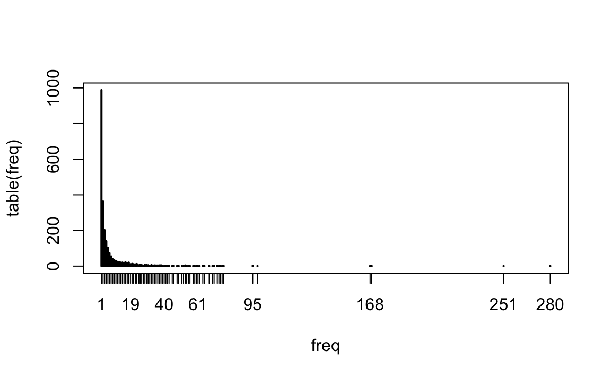

Chapter 18 Text Analysis
This unit focuses on computational text analysis (or “text-as-data”). We will explore:
- Preprocessing a corpus for common text analysis.
- Sentiment Analysis and Dictionary Methods, a simple, supervised method for classification.
- Distinctive Words, or word-separating techniques to compare corpora.
- Structural Topic Models, a popular unsupervised method for text exploration and analysis.
These materials are based off a longer, week-long intensive workshop on computational text analysis. If you are interested in text-as-data, I would encourage you to work through these materials on your own: https://github.com/rochelleterman/FSUtext
18.1 Preprocessing
First let’s load our required packages:
library(tm) # Framework for text mining
library(tidyverse) # Data preparation and pipes %>%
library(ggplot2) # For plotting word frequencies
library(wordcloud) # Wordclouds!A corpus is a collection of texts, usually stored electronically, and from which we perform our analysis. A corpus might be a collection of news articles from Reuters or the published works of Shakespeare.
Within each corpus we will have separate articles, stories, volumes, etc., each treated as a separate entity or record. Each unit is called a document.
For this unit, we will be using a section of Machiavelli’s Prince as our corpus. Since The Prince is a monograph, we have already “chunked” the text so that each short paragraph or “chunk” is considered a “document.”
18.1.1 From Words to Numbers
Corpus Readers
The tm package supports a variety of sources and formats. Run the code below to see what it includes.
getSources()
#> [1] "DataframeSource" "DirSource" "URISource" "VectorSource"
#> [5] "XMLSource" "ZipSource"
getReaders()
#> [1] "readDataframe" "readDOC"
#> [3] "readPDF" "readPlain"
#> [5] "readRCV1" "readRCV1asPlain"
#> [7] "readReut21578XML" "readReut21578XMLasPlain"
#> [9] "readTagged" "readXML"Here we will be reading documents from a CSV file in which each row is a document that includes columns for text and metadata (information about each document). This is the easiest option if you have metadata.
docs.df <-read.csv("data/mach.csv", header=TRUE) # Read in CSV file
docs.df <- docs.df %>%
mutate(text = str_conv(text, "UTF-8"))
docs <- Corpus(VectorSource(docs.df$text))
docs
#> <<SimpleCorpus>>
#> Metadata: corpus specific: 1, document level (indexed): 0
#> Content: documents: 188Once we have the corpus, we can inspect the documents using inspect().
# See the 16th document
inspect(docs[16])
#> <<SimpleCorpus>>
#> Metadata: corpus specific: 1, document level (indexed): 0
#> Content: documents: 1
#>
#> [1] Therefore, since a ruler cannot both practise this virtue of generosity and be known to do so without harming himself, he would do well not to worry about being called miserly. For eventually he will come to be considered more generous, when it is realised that, because of his parsimony, his revenues are sufficient to defend himself against any enemies that attack him, and to undertake campaigns without imposing special taxes on the people. Thus he will be acting generously towards the vast majority, whose property he does not touch, and will be acting meanly towards the few to whom he gives nothing. Those rulers who have achieved great things in our own times have all been considered mean; all the others have failed. Although Pope Julius II cultivated a reputation for generosity in order to become pope, he did not seek to maintain it afterwards, because he wanted to bePreprocessing Functions
Many text analysis applications follow a similar ‘recipe’ for preprocessing, involving (the order of these steps might differ as per application)
- Tokenizing the text to unigrams (or bigrams, or trigrams).
- Converting all characters to lowercase.
- Removing punctuation.
- Removing numbers.
- Removing Stop Words, inclugind custom stop words.
- “Stemming” words, or lemmitization. There are several stemming algorithms. Porter is the most popular.
- Creating a Document-Term Matrix.
tm lets us convert a corpus to a DTM while completing the pre-processing steps in one step.
Weighting
One common pre-processing step that some applications may call for is applying tf-idf weights. The tf-idf, or term frequency-inverse document frequency, is a weight that ranks the importance of a term in its contextual document corpus. The tf-idf value increases proportionally to the number of times a word appears in the document, but is offset by the frequency of the word in the corpus, which helps to adjust for the fact that some words appear more frequently in general. In other words, it places importance on terms frequent in the document but rare in the corpus.
dtm.weighted <- DocumentTermMatrix(docs,
control = list(weighting =function(x) weightTfIdf(x, normalize = TRUE),
stopwords = TRUE,
tolower = TRUE,
removeNumbers = TRUE,
removePunctuation = TRUE,
stemming=TRUE))Compare the first 5 rows and 5 columns of the dtm and dtm.weighted. What do you notice?
inspect(dtm[1:5,1:5])
#> <<DocumentTermMatrix (documents: 5, terms: 5)>>
#> Non-/sparse entries: 3/22
#> Sparsity : 88%
#> Maximal term length: 7
#> Weighting : term frequency (tf)
#> Sample :
#> Terms
#> Docs abandon abil abject abl ablest
#> 1 0 0 0 0 0
#> 2 0 1 0 0 0
#> 3 0 0 0 0 0
#> 4 0 1 0 1 0
#> 5 0 0 0 0 0
inspect(dtm.weighted[1:5,1:5])
#> <<DocumentTermMatrix (documents: 5, terms: 5)>>
#> Non-/sparse entries: 3/22
#> Sparsity : 88%
#> Maximal term length: 7
#> Weighting : term frequency - inverse document frequency (normalized) (tf-idf)
#> Sample :
#> Terms
#> Docs abandon abil abject abl ablest
#> 1 0 0.0000 0 0.0000 0
#> 2 0 0.0402 0 0.0000 0
#> 3 0 0.0000 0 0.0000 0
#> 4 0 0.0310 0 0.0228 0
#> 5 0 0.0000 0 0.0000 018.1.2 Exploring the DTM
Dimensions
Let’s look at the structure of our DTM. Print the dimensions of the DTM. How many documents do we have? How many terms?
Frequencies
We can obtain the term frequencies as a vector by converting the document term matrix into a matrix and using colSums to sum the column counts.
# How many terms?
freq <- colSums(as.matrix(dtm))
freq[1:5]
#> abandon abil abject abl ablest
#> 4 35 1 61 1
length(freq)
#> [1] 2368By ordering the frequencies, we can list the most frequent terms and the least frequent terms.
Plotting Frequencies
Let’s make a plot that shows the frequency of frequencies for the terms. (For example, how many words are used only once? 5 times? 10 times?)
# Frequency of frenquencies
head(table(freq),15)
#> freq
#> 1 2 3 4 5 6 7 8 9 10 11 12 13 14 15
#> 988 363 202 140 103 73 55 39 33 29 24 22 20 20 19
tail(table(freq),15)
#> freq
#> 65 68 70 71 73 74 75 76 77 95 98 168 169 251 280
#> 1 1 1 1 2 1 1 1 1 2 1 1 1 1 1
# Plot
plot(table(freq))
What does this tell us about the nature of language?
Exploring Common Words
The tm package has lots of useful functions to help you explore common words and associations:
# Have a look at common words
findFreqTerms(dtm, lowfreq=50) # Words that appear at least 50 times
#> [1] "abl" "act" "alway" "armi" "becom" "can"
#> [7] "consid" "either" "forc" "great" "king" "maintain"
#> [13] "make" "man" "mani" "men" "much" "must"
#> [19] "never" "new" "one" "order" "other" "peopl"
#> [25] "power" "reason" "ruler" "sinc" "state" "subject"
#> [31] "time" "troop" "use" "want" "way" "well"
#> [37] "will"
# Which words correlate with "war"?
findAssocs(dtm, "war", 0.3)
#> $war
#> wage fight antioch argu brew induc lip maxim
#> 0.73 0.52 0.45 0.45 0.45 0.45 0.45 0.45
#> relianc sage trifl postpon mere evil avoid flee
#> 0.45 0.45 0.45 0.41 0.35 0.34 0.32 0.32
#> occupi glad glorious heard hunt ineffect knew produc
#> 0.32 0.30 0.30 0.30 0.30 0.30 0.30 0.30
#> temporis
#> 0.30We can even make wordclouds showing the most commons terms:
# Wordclouds!
set.seed(123)
wordcloud(names(sorted), sorted, max.words=100, colors=brewer.pal(6,"Dark2"))
#> Warning in wordcloud(names(sorted), sorted, max.words = 100, colors =
#> brewer.pal(6, : ruler could not be fit on page. It will not be plotted.
#> Warning in wordcloud(names(sorted), sorted, max.words = 100, colors =
#> brewer.pal(6, : power could not be fit on page. It will not be plotted.Removing Sparse Terms
Somtimes we want to remove sparse terms and, thus, increase efficency. Look up the help file for the function removeSparseTerms. Using this function, create an object called dtm.s that contains only terms with <.9 sparsity (meaning they appear in more than 10% of documents).
dtm.s <- removeSparseTerms(dtm,.9)
dtm
#> <<DocumentTermMatrix (documents: 188, terms: 2368)>>
#> Non-/sparse entries: 11754/433430
#> Sparsity : 97%
#> Maximal term length: 15
#> Weighting : term frequency (tf)
dtm.s
#> <<DocumentTermMatrix (documents: 188, terms: 136)>>
#> Non-/sparse entries: 4353/21215
#> Sparsity : 83%
#> Maximal term length: 12
#> Weighting : term frequency (tf)18.1.3 Exporting the DTM
We can convert a DTM to a matrix or dataframe in order to write it to a CSV, add metadata, etc.
First, create an object that converts the DTM to a dataframe (we first have to convert it to a matrix and then to a dataframe):
18.2 Sentiment Analysis and Dictionary Methods
To demonstrate sentiment analysis, we are going to explore lyrics from Taylor Swift songs.
Road the code below to get started:
18.2.1 Preprocessing and Setup
First, we must preprocess the corpus. Create a document-term matrix from the lyrics column of the ts dataframe. Complete the following preprocessing steps:
- Convert to lower.
- Remove stop words.
- Remove numbers.
- Remove punctuation.
Think: Why is stemming inappropriate for this application?
ts <- read.csv("data/taylor_swift.csv")
# Preprocess and create DTM
docs <- Corpus(VectorSource(ts$lyrics))
dtm <- DocumentTermMatrix(docs,
control = list(tolower = TRUE,
removeNumbers = TRUE,
removePunctuation = TRUE,
stopwords = TRUE
))
# Convert to dataframe
dtm <- as.data.frame(as.matrix(dtm))Sentiment Dictionaries
We are going to use sentiment dictionaries from the tidytext package. Using the get_sentiments function, load the “bing” dictionary and store it in an object called sent.
sent <- get_sentiments("bing")
head(sent)
#> # A tibble: 6 x 2
#> word sentiment
#> <chr> <chr>
#> 1 2-faces negative
#> 2 abnormal negative
#> 3 abolish negative
#> 4 abominable negative
#> 5 abominably negative
#> 6 abominate negativeWe will now add a column to sent called score. This column should hold a “1” for positive words and “-1” for negative words.
18.2.2 Scoring the Songs
We are now ready to score each song.
(NB: There are probably many ways to program a script that performs this task. If you can think of a more elegant way, go for it!)
First, we will create a dataframe that holds all the words in our DTM along with their sentiment score.
# Get all the words in our DTM and put them in a dataframe
words = data.frame(word = colnames(dtm), stringsAsFactors = F)
head(words)
#> word
#> 1 back
#> 2 backroads
#> 3 bed
#> 4 believe
#> 5 beneath
#> 6 beside
# Get their sentiment scores
words_sent <- words %>%
left_join(sent) %>%
mutate(score = replace_na(score, 0))
#> Joining, by = "word"We can now use matrix algebra (!!) to multiply our DTM by the scoring vector. This will return to us a score for each document (i.e., song).
# Calculate documents scores with matrix algebra!
doc_scores <- as.matrix(dtm) %*% words_sent$score
# Put the scores in the original documents dataframe
ts$sentiment <- doc_scoresWhich song is happiest? Go listen to the song and see if you agree.
18.2.3 Challenges
Challenge 1.
Using the code we wrote above, make a function that accepts 1) a vector of texts and 2) a sentiment dictionary (i.e., a dataframe with words and scores) and returns a vector of sentiment scores for each text.
18.3 Distinctive Words
This lesson finds distinctive words in the speeches of Obama and Trump.
Run the following code to:
- Import the corpus.
- Create a DTM.
require(tm)
require(matrixStats) # For statistics
require(tidyverse)
# Import corpus
docs <- Corpus(DirSource("Data/trump_obama"))
# Preprocess and create DTM
dtm <- DocumentTermMatrix(docs,
control = list(tolower = TRUE,
removePunctuation = TRUE,
removeNumbers = TRUE,
stopwords = TRUE,
stemming=TRUE))
# Print the dimensions of the DTM
dim(dtm)
#> [1] 11 4094
# Take a quick look
inspect(dtm[,100:104])
#> <<DocumentTermMatrix (documents: 11, terms: 5)>>
#> Non-/sparse entries: 14/41
#> Sparsity : 75%
#> Maximal term length: 11
#> Weighting : term frequency (tf)
#> Sample :
#> Terms
#> Docs alien align alik aliv allamerican
#> Obama_2009.txt 0 0 1 0 0
#> Obama_2010.txt 0 0 1 1 0
#> Obama_2011.txt 0 1 0 0 0
#> Obama_2012.txt 0 0 0 1 0
#> Obama_2013.txt 0 0 0 0 0
#> Obama_2014.txt 0 0 0 1 0
#> Obama_2015.txt 1 0 1 0 0
#> Trump_2017.txt 0 1 0 0 0
#> Trump_2018.txt 1 0 0 0 1
#> Trump_2019.txt 3 0 1 1 0Oftentimes scholars will want to compare different corpora by finding the words (or features) distinctive to each corpora. But finding distinctive words requires a decision about what “distinctive” means. As we will see, there are a variety of definitions that we might use.
18.3.1 Unique Usage
The most obvious definition of distinctive is “exclusive.” That is, distinctive words are those found exclusively in texts associated with a single speaker (or group). For example, if Trump uses the word “access” and Obama never does, we should count “access” as distinctive. Finding words that are exclusive to a group is a simple exercise. All we have to do is sum the usage of each word use across all texts for each speaker and then look for cases where the sum is zero for one speaker.
# Turn DTM into dataframe
dtm.m <- as.data.frame(as.matrix(dtm))
dtm.m$that <- NULL # Fix weird encoding error with stop words
dtm.m$dont <- NULL
# Subset into 2 DTMs, 1 for each speaker
obama <- dtm.m[1:8,]
trump <- dtm.m[9:11,]
# Sum word usage counts across all texts
obama <- colSums(obama)
trump <- colSums(trump)
# Put those sums back into a dataframe
df <- data.frame(rbind(obama, trump))
df[ ,1:5]
#> abandon abess abid abil abject
#> obama 2 1 1 7 0
#> trump 1 0 0 1 1
# Get words where one speaker's usage is 0
solelyobama <- unlist(df[1, trump==0])
solelyobama <- solelyobama[order(solelyobama, decreasing = T)] # Order them by frequency
head(solelyobama, 10) # Get top 10 words for Obama
#> technolog bank innov doesnt teacher loan wont debat
#> 31 30 30 29 26 22 22 21
#> climat democraci
#> 19 19
solelytrump <- unlist(df[2, obama==0])
solelytrump <- solelytrump[order(solelytrump, decreasing = T)] # Order them by frequency
head(solelytrump, 10) # Get top 10 words for Trump
#> isi agent america. audienc megan it. obamacar alic
#> 9 8 8 8 8 7 7 6
#> beauti elvin
#> 6 6This is a start, but oftentimes these words tend not to be terribly interesting or informative, so we will remove them from our corpus in order to focus on identifying distinctive words that appear in texts associated with every speaker.
18.3.2 Differences in Frequencies
Another basic approach to identifying distinctive words is to compare the frequencies at which speakers use a word. If one speaker uses a word often across his or her oeuvre, and another barely uses the word at all, the difference in their respective frequencies will be large. We can calculate this quantity the following way:
# Take the differences in frequencies
diffFreq <- obama - trump
# Sort the words
diffFreq <- sort(diffFreq, decreasing = T)
# The top Obama words
head(diffFreq, 10)
#> will year job work make can american america
#> 306 217 214 186 177 172 165 155
#> new peopl
#> 150 147
# The top Trump words
tail(diffFreq, 10)
#> illeg immigr isi usa hero ryan border great thank drug
#> -9 -9 -9 -9 -11 -11 -13 -13 -19 -2218.3.3 Differences in Averages
This is a good start. But what if one speaker uses more words overall? Instead of using raw frequencies, a better approach would look at the average rate at which speakers use various words.
We can calculate this quantity the following way:
- Normalize the DTM from counts to proportions.
- Take the difference between one speaker’s proportion of a word and another’s proportion of the same word.
- Find the words with the highest absolute difference.
# Normalize into proportions
rowTotals <- rowSums(df) # Create vector with row totals, i.e., total number of words per document
head(rowTotals) # Notice that one speaker uses more words than the other
#> obama trump
#> 23021 7432
# Change frequencies to proportions
df <- df/rowTotals # Change frequencies to proportions
df[,1:5]
#> abandon abil abl abort abraham
#> obama 8.69e-05 0.000304 0.000652 4.34e-05 4.34e-05
#> trump 1.35e-04 0.000135 0.001211 1.35e-04 1.35e-04
# Get difference in proportions
means.obama <- df[1,]
means.trump <- df[2,]
score <- unlist(means.obama - means.trump)
# Find words with highest difference
score <- sort(score, decreasing = T)
head(score,10) # Top Obama words
#> job make busi let need work help economi energi can
#> 0.00620 0.00541 0.00473 0.00426 0.00419 0.00407 0.00388 0.00378 0.00363 0.00346
tail(score,10) # Top Trump words
#> border tonight immigr unit state drug must great
#> -0.00284 -0.00293 -0.00322 -0.00322 -0.00322 -0.00342 -0.00354 -0.00476
#> thank american
#> -0.00483 -0.00650This is a start. The problem with this measure is that it tends to highlight differences in very frequent words. For example, this method gives greater attention to a word that occurs 30 times per 1,000 words in Obama and 25 times per 1,000 in Trump than it does to a word that occurs 5 times per 1,000 words in Obama and 0.1 times per 1,000 words in Trump. This does not seem right. It seems important to recognize cases when one speaker uses a word frequently and another speaker barely uses it.
As this initial attempt suggests, identifying distinctive words will be a balancing act. When comparing two groups of texts, differences in the rates of frequent words will tend to be large relative to differences in the rates of rarer words. Human language is variable; some words occur more frequently than others regardless of who is writing. We need to find a way of adjusting our definition of distinctive in light of this.
18.3.4 Differences in Averages, Adjustment
One adjustment that is easy to make is to divide the difference in speakers’ average rates by the average rate across all speakers. Since dividing a quantity by a large number will make that quantity smaller, our new distinctiveness score will tend to be lower for words that occur frequently. While this is merely a heuristic, it does move us in the right direction.
# Get the average rate of all words across all speakers
means.all <- colMeans(df)
# Now divide the difference in speakers' rates by the average rate across all speakers
score <- unlist((means.obama - means.trump) / means.all)
score <- sort(score, decreasing = T)
head(score,10) # Top Obama words
#> student cant idea money oil higher earn
#> 1.78 1.77 1.70 1.67 1.67 1.66 1.60
#> leadership research respons
#> 1.60 1.59 1.58
tail(score,10) # Top Trump words
#> drug grace death heart pillar southern terribl unfair
#> -1.77 -1.80 -1.82 -1.82 -1.84 -1.84 -1.84 -1.84
#> gang ryan
#> -1.87 -1.9018.4 Structural Topic Models
This unit gives a brief overview of the stm (structural topic model) package. Please read the vignette for more detail.
Structural topic model is a way to estimate a topic model that includes document-level metadata. One can then see how topical prevalence changes according to that metadata.
The data we will be using for this unit consists of all articles about women published in the New York Times and Washington Post, 1980-2014. You worked with a subset of this data in your last homework.
Load the dataset. Notice that we have the text of the articles along with some metadata.
# Load data
women <- read.csv('data/women-full.csv')
names(women)
#> [1] "BYLINE" "TEXT.NO.NOUN" "PUBLICATION"
#> [4] "TITLE" "COUNTRY" "COUNTRY_FINAL"
#> [7] "YEAR" "UID" "COUNTRY_NR"
#> [10] "entities" "LENGTH" "COUNTRY_TOP_PERCENT"
#> [13] "COUNTRY_CODE" "TEXT" "DATE"
#> [16] "COUNTRY_MAJOR" "TYPE" "REGION"
#> [19] "SUBJECT"18.4.1 Preprocessing
STM has its own unique preprocessing functions and procedure, which I have coded below. Notice that we are going to use the TEXT.NO.NOUN column, which contains all the text of the articles without proper nouns (which I removed earlier).
# Pre-process
temp<-textProcessor(documents = women$TEXT.NO.NOUN, metadata = women)
#> Building corpus...
#> Converting to Lower Case...
#> Removing punctuation...
#> Removing stopwords...
#> Removing numbers...
#> Stemming...
#> Creating Output...
meta<-temp$meta
vocab<-temp$vocab
docs<-temp$documents
# Prep documents in the correct format
out <- prepDocuments(docs, vocab, meta)
#> Removing 19460 of 39403 terms (19460 of 1087166 tokens) due to frequency
#> Your corpus now has 4531 documents, 19943 terms and 1067706 tokens.
docs<-out$documents
vocab<-out$vocab
meta <-out$meta18.4.2 Estimate Model
We are now going to estimate a topic model with 15 topics by regressing topical prevalence on region and year covariates.
Running the full model takes a long time to finish. For that reason, we are going to add an argument max.em.its, which sets the number of iterations. By keeping it low (15), we will see a rough estimate of the topics. You can always go back and estimate the model to convergence.
model <- stm(docs, vocab, 15, prevalence = ~ REGION + s(YEAR), data = meta, seed = 15, max.em.its = 15)Let’s see what our model came up with! The following tools can be used to evaluate the model:
labelTopicsgives the top words for each topic.findThoughtsgives the top documents for each topic (the documents with the highest proportion of each topic).
# Top Words
labelTopics(model)
#> Topic 1 Top Words:
#> Highest Prob: show, design, fashion, women, art, one, like
#> FREX: coutur, fashion, museum, sculptur, ready--wear, jacket, galleri
#> Lift: ---inch, -ankl, alexandr, armatur, armhol, art-fair, avant
#> Score: coutur, art, artist, fashion, museum, exhibit, cloth
#> Topic 2 Top Words:
#> Highest Prob: said, polic, women, kill, report, offici, govern
#> FREX: polic, suicid, kill, attack, investig, suspect, arrest
#> Lift: abducte, charanjit, humanity-soak, male-control, sunil, kalpana, ciudad
#> Score: polic, rape, kill, said, arrest, attack, investig
#> Topic 3 Top Words:
#> Highest Prob: women, team, game, said, world, play, olymp
#> FREX: tournament, championship, olymp, soccer, player, game, medal
#> Lift: -america, -foot--inch, -hole, -kilomet, -rank, -round, -trump
#> Score: olymp, championship, tournament, team, player, game, medal
#> Topic 4 Top Words:
#> Highest Prob: book, year, life, first, write, novel, work
#> FREX: novel, literari, fiction, book, memoir, novelist, poet
#> Lift: buster, calla, goncourt, identical-twin, italian-american, kilcher, klone
#> Score: novel, book, fiction, literari, poet, writer, write
#> Topic 5 Top Words:
#> Highest Prob: women, said, femal, percent, militari, will, compani
#> FREX: combat, board, quota, militari, bank, corpor, infantri
#> Lift: -combat, cpr, gender-divers, nonexecut, outfitt, r-calif, r-ni
#> Score: women, militari, infantri, combat, percent, quota, femal
#> Topic 6 Top Words:
#> Highest Prob: protest, said, one, site, peopl, young, video
#> FREX: orthodox, internet, web, video, rabbi, prayer, site
#> Lift: balaclava, grrrl, tehrik-, braveheart, drawbridg, gravesit, guerrilla-styl
#> Score: protest, site, orthodox, video, jewish, rabbi, xxxfx
#> Topic 7 Top Words:
#> Highest Prob: women, work, said, year, percent, men, ese
#> FREX: ese, factori, employ, incom, worker, job, market
#> Lift: flextim, management-track, nec, nontransfer, rabenmutt, chiho, fumiko
#> Score: ese, percent, compani, work, job, women, factori
#> Topic 8 Top Words:
#> Highest Prob: women, sexual, sex, rape, men, violenc, said
#> FREX: harass, sexual, sex, assault, brothel, violenc, behavior
#> Lift: offenc, tarun, chaud, much-lov, newt, tiresom, sex-rel
#> Score: rape, sexual, harass, violenc, sex, assault, brothel
#> Topic 9 Top Words:
#> Highest Prob: women, said, right, law, islam, govern, religi
#> FREX: islam, religi, veil, constitut, saudi, secular, cleric
#> Lift: afghan-styl, anglo-, archdeacon, bien-aim, episcopaci, fez, government-encourag
#> Score: islam, law, women, right, religi, ordin, saudi
#> Topic 10 Top Words:
#> Highest Prob: said, one, famili, peopl, day, like, home
#> FREX: villag, room, smile, son, couldnt, recal, sit
#> Lift: charpoy, jet-black, mitra, schermerhorn, single-famili, tyson, uja-feder
#> Score: villag, husband, fistula, famili, school, girl, said
#> Topic 11 Top Words:
#> Highest Prob: women, film, one, like, woman, say, play
#> FREX: film, theater, movi, charact, actress, documentari, audienc
#> Lift: clive, fine-tun, kaffir, nushus, shrew, nushu, cadel
#> Score: film, theater, movi, nushu, play, orchestra, femin
#> Topic 12 Top Words:
#> Highest Prob: polit, elect, parti, minist, presid, govern, said
#> FREX: voter, elect, parti, prime, candid, vote, cabinet
#> Lift: ernesto, pinbal, influence-peddl, information-servic, kakuei, left--cent, marxist-leninist
#> Score: elect, parti, vote, minist, voter, polit, candid
#> Topic 13 Top Words:
#> Highest Prob: women, said, abort, cancer, health, studi, breast
#> FREX: implant, cancer, breast, pill, virus, patient, estrogen
#> Lift: acet, adren, ambulatori, analges, anastrozol, antioxid, ashkenazi
#> Score: cancer, abort, breast, pill, implant, health, virus
#> Topic 14 Top Words:
#> Highest Prob: women, said, confer, will, world, organ, right
#> FREX: deleg, confer, forum, page, peac, nongovernment, ambassador
#> Lift: -glass, barack, brooklyn-born, expansion, foreclosur, guarantor, holden
#> Score: deleg, confer, forum, page, palestinian, peac, mrs
#> Topic 15 Top Words:
#> Highest Prob: said, women, rape, court, case, girl, practic
#> FREX: mutil, genit, circumcis, asylum, sentenc, judg, tribun
#> Lift: labia, layli, minora, multifaith, paraleg, salim, strip-search
#> Score: rape, genit, circumcis, mutil, court, sentenc, prosecutor
# Example Docs
findThoughts(model, texts = meta$TITLE, n=2,topics = 1:15)
#>
#> Topic 1:
#> KENZO'S CAREFREE STYLES AT AN OFFBEAT SHOWING
#> A MODERN LOOK, A CLASSIC TOUCH FROM SAINT LAURENT
#> Topic 2:
#> Assailants Kill 4 Iraqi Women Working for U.S.; Gunmen Follow Van Carrying Laundry Employees
#> WORLD IN BRIEF
#> Topic 3:
#> AMERICANS LEAD EAST GERMANS IN TRACK
#> Russians Chart a New Path
#> Topic 4:
#> BEST SELLERS: September 6, 1998
#> BEST SELLERS: September 13, 1998
#> Topic 5:
#> In Britain, a Big Push for More Women to Serve on Corporate Boards
#> Poll: Allow women in combat units
#> Topic 6:
#> Neda's Legacy; A woman's death moves Iranian protesters.
#> Jewish Feminists Prompt Protests at Wailing Wall
#> Topic 7:
#> China Scrambles for Stability as Its Workers Age
#> A high price for a paycheck; Caught between the demands of the corporate workplace and of their traditional roles in society, more South Korean women are putting off marriage and parenthood
#> Topic 8:
#> Confronting Rape in India, and Around the World
#> Sexual Harassment Prosecutions Get Short Shrift in India, Lawyer Says
#> Topic 9:
#> English Church Advances Bid For Women As Bishops
#> Egypt Passes Law On Women's Rights; Polygamy Still Allowed for Men
#> Topic 10:
#> An Old Cinema in Pakistan Has New Life After Quake
#> Maria Duran's Endless Wait
#> Topic 11:
#> For France, An All-Purpose Heartthrob
#> Film: Brazilian 'Vera'
#> Topic 12:
#> The Widow Of Ex-Leader Wins Race In Panama
#> Cabinet Defeated in Iceland as Feminists Gain
#> Topic 13:
#> SECTION: HEALTH; Pg. T18
#> Dense Breasts May Need Sonograms to Detect Cancer
#> Topic 14:
#> DISPUTES ON KEY ISSUES STALL KENYA PARLEY
#> 'CHAOTIC' CONDITIONS FEARED AT U.N.'S PARLEY ON WOMEN
#> Topic 15:
#> Woman Fleeing Tribal Rite Gains Asylum; Genital Mutilation Is Ruled Persecution
#> Refugee From Mutilation18.4.3 Interpret Model
Let’s all load a fully-estimated model that I ran before class.
18.4.4 Analyze Topics
We are now going to see how the topics compare in terms of their prevalence across regions. What do you notice about the distribution of topic 9?
# Corpus summary
plot.STM(model, type="summary", custom.labels = labels, main="")
# Estimate covariate effects
prep <- estimateEffect(1:15 ~ REGION + s(YEAR), model, meta = meta, uncertainty = "Global", documents=docs)
#> Warning: Using formula(x) is deprecated when x is a character vector of length > 1.
#> Consider formula(paste(x, collapse = " ")) instead.
# Plot topic 9 over regions
regions = c("Asia", "EECA", "MENA", "Africa", "West", "LA")
plot.estimateEffect(prep, "REGION", method = "pointestimate", topics = 9, printlegend = TRUE, labeltype = "custom", custom.labels = regions, main = "Women's Rights", ci.level = .95, nsims=100)